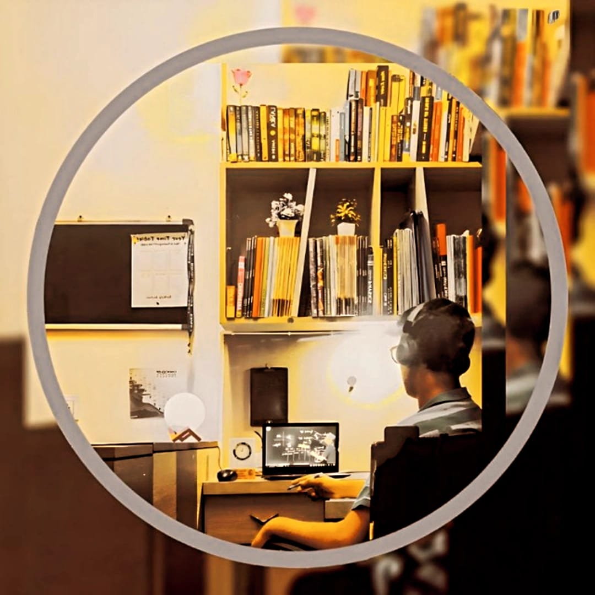

Curious mind ,clear code, and a love for vivid interfaces

Hi, I'm Rajat Rawal ☺️
I'm a passionate web developer with a knack for creating dynamic and user-friendly websites. With a background in computer science, I specialize in front-end development and have experience working with various web technologies.
When I'm not coding, you can find me exploring the latest tech trends, contributing to open-source projects, or indulging in my love for photography.
Feel free to explore my portfolio and get in touch if you'd like to collaborate on a project or just say hello!
My Journey
I cleared the JEE Mains with an excellent rank and also performed strongly in JEE Advanced, earning a seat in IIT Mandi (Bio-Science).
However, my long-standing passion for Computer Science and Software Development guided my final choice. With a clear vision of the career I wanted to build, I decided to pursue Computer Science Engineering at Delhi Technological University (DTU).
My JEE preparation was a period of intense dedication—countless hours of problem-solving, discipline, and consistency. The journey taught me resilience, focus, and the ability to push through challenges. These qualities continue to drive my work today as I grow in the field of technology and engineering.
My Experiences
Internship at Tech Solutions - Developed a responsive website for a local business.
Freelance Projects - Created custom websites for various clients, focusing on user experience and design.
Open Source Contributor - Actively contributed to several open-source web development projects on GitHub.